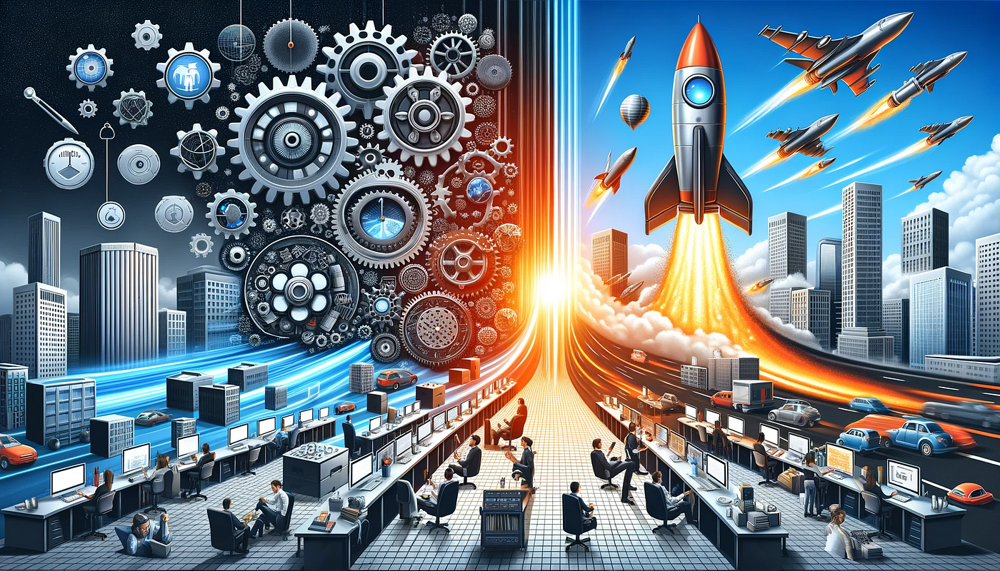
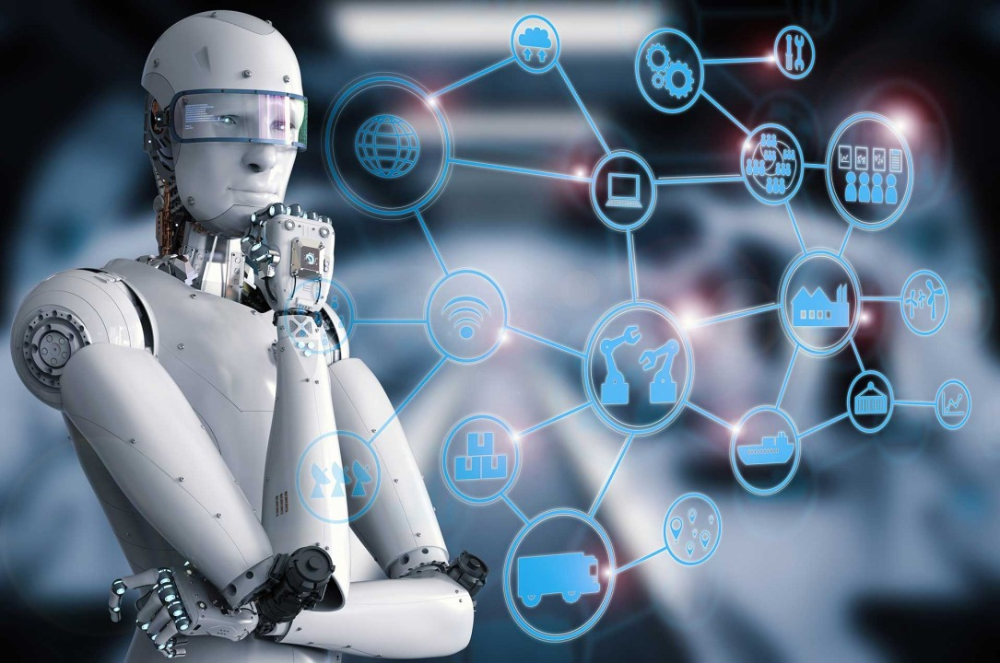
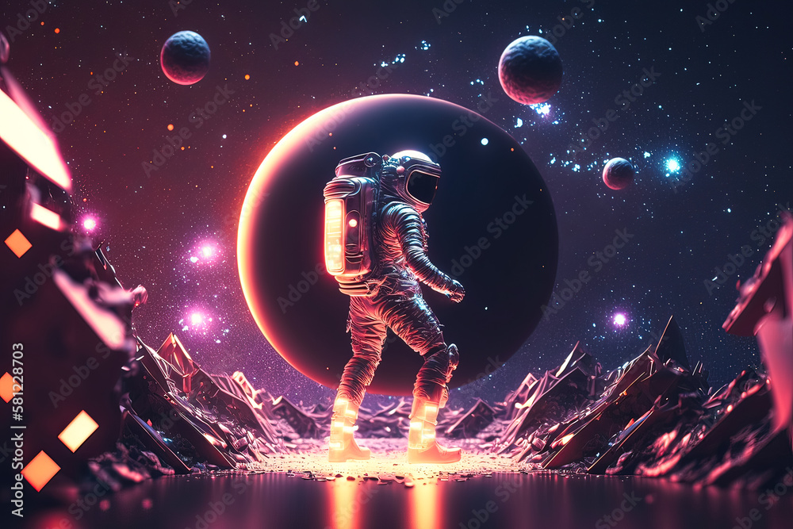

To symbolize a movement or ideology that aims to counter negativity, encourage positivity, and work towards a better future for all
In today's interconnected world, the internet has played a significant role in fostering a global community where ideas and dreams can flourish. This unprecedented level of connectivity has led to a collective realization that we are living in a truly pivotal time.
1. We recognize that each action, in every moment answers
the individual question of “Who Am I?”.
2. We recognize that every person tells themselves a story
about who they are and what they are meant to become, changing
what actions they take on a daily basis.
3. We look at these new beginnings as the perfect
opportunity to commit to helping be a positive force for the
creation of this better future.
4. We are driven to act towards effective positive impact
based on a realization that every action defines the story of our
soul.
5. We recognize that we are all man among gods (children)
in the sense that everyone will become cared for by a god we birth
from our collective superorganism.
6. We believe we are here in our infancy to learn to find,
retain, and act on this awareness of the collective’s inherent
importance in our lives.
7. We question authority, and seek collective ownership.
We are focused on offering the world a positive public narrative
to offer a story that attempts to make every person feel empowered
and valued in helping make things go right. As artificial
intelligence is accelerating, the purpose of IQ diminishing, as
the need for EQ raises. Its imperative more of humanity recognizes
that we are in this together. Through this mindset, the best
stories and the dreams of non-profits can finally become realized
supported by the abundance our techno-capital machine creates.
As we enter an age of great surplus, it becomes more important to
focus not just on using power for the sake of gain, but with a
focus the empowerment of individuals and the whole. This is the
age of recalibration, where spiritual machines which align our
highest interests will be most important in bringing to market. As
a humanity, we’ve lost the control switch on civilization and need
movements which will help us recalibrate, and align around truth,
and systemic, systematic plans.
Humanity can be considered its own organism or super-intelligence. We might look at the internet as the nervous system of our collective body with social media being the emergent method that information is spread. A majority of all global communication is fed through this nervous system, and the signals are sorted towards what provokes the most extraction of value from each one of our individual cells. While there are benefits from the democratization of our voice from the broadcast era, the underlying algorithms which sort the things we share is misaligned. Engagement algorithms will not naturally foster this discourse as it is inherently aligned at promoting extremist viewpoints that cause higher engagement.
People want to have the best opinion, but when the best opinions
are collectively drawn away from popularity, the world is pushed
towards the extreme, rabbit holes, or pure pleasure.
As global problems that drive existential awareness get more
important inside of the
Overton window
today’s paradigm of ai algorithms causes hyper-charged tribalism.
Hypercharged tribalism happens when a concentrated tribal divide
reaches such intensity that it resembles a religious war,
subsuming the entire society and the people within it.
Hypercharged tribalism turns thinking, feeling human beings into
loyal colony ants, overriding their intellect, their humanity,
even their love of family and friends. It’s a form of group
madness—a contagion that spreads like an epidemic, awakening the
ancient survival instincts in millions of minds all at once, as
huge groups of people slip into golem mode in lockstep.
The next hyper-charged tribalism that will occur on the internet
will be on the topic of Ai as it scales the potential of human
will exponentially.
Thus, the worry about the idea of Ai misalignment will GROW
alongside its power to divide us.
The people who consume their truth by popularity of these
“in-groups” rather than creating it from first principles, will
get sold false claims by false gods, served by the failed
landscape of collective sense-making through social platforms.
Yet these extreme viewpoints are not without some benefit. They
will each hold a key showing off the actual truth of the middle
ground.
Understanding this tendency allows one to view the sides that form
with a sense of pity, and we can resonate with both ends of the
spectrum, to help us see what is actually right.
It is likely one side will fear the exponential growth, pushing
out a message like “Pause”, “Stop”, and “Control”, they will gain
support by big companies, state power, and politicians who benefit
from this regulatory capture. The other side will praise
exponential growth… with a message of “optimism”, “Accelerate”,
“WAGMI”, and other positive lingo and this will benefit, founders,
investors and people needing copium.
1. We too often view hyper-charged tribalism as a human
problem, as if it was not a coordination of information problem.
As if our human hearts wanted climate change to be a thing. Too
many are not realizing we have ape-like minds and paleo-lithic
institutions who are ultimately being controlled by the flow of
information through super computer machines who view your brain as
a coal mine. Mass extraction, leaving it a dead pit always
returning to get mined more, is its supreme goal. To fix it we
must simply focus on fixing the underlying problem.
2. Ai alignment is the worlds biggest problem, people are
pushed and divided towards extremist positions rather than focused
on higher accuracy truth. This truth will not be spread through
the algorithm, for someone who learns it, and leaves the platform
will leave a negative mark on the memetic potential of this idea.
Instead hysterical sci-fi fantasies about the obliteration of our
world will cause people to focus on trying to find some golden key
to align this future super power, rather than seeing fixing
present misalignment as the golden ticket for an empowered,
unified, super organism.
3. We are enmeshed in psychological warfare beyond any
individual’s ability to understand. Hundreds of thousands of
algorithms vying and competing, for the right to own our
attention. The core of our soul is being siphoned.
4. Our society is plagued with strong cocktails of
artificial sources of dopamine that distract and attack critical
thinking pushing your state towards the bottom of your brain stem.
5. Our unenlightened capitalist society wants to script
you.
6. To ‘smooth out’ the outliers from the graphs and make it
presentable and organized into two sides.
7. To turn you into data that can be mined by focusing you
against each other and not at it, and forget the
true pyramid of life of who can contribute more love
8. From slot machines, to infinite scrolling feeds, to
sugar water and fast food burgers. Your internal operating system
is under constant pull to be extracted by this capitalistic
machine.
9. Thus Ai, and how we should deal with it become obvious…
by building communities of empowerment who coalesce around
strength, truth, and positive virtues. To build an application
like
Tiktok in style, but maximizing value FOR YOU, rather
than FROM YOU.
10. The people so focused on Ai in the world are either
going to want to boundlessly accelerate, solving the uncomfortable
part of their mind which requires heightened responsibility and
action from them with believing the hyper-charged tribalism.
11. Or the beauty of their hearts trying to help but led
towards no true mission, will lead them to want to completely stop
Ai once and for all, and rather than actually solving the
misaligned Ai which brought us here in the first place, they will
virtue signal at the top political rung to stop the field
completely, or focus on pie in the sky theoretical fixes in order
to always require more funding, without a measure for real world
progress.
12. Do not fall into these camps, they are internet traps.
They WILL be popular online sub-culture, but they will inevitably
be overtaken by growth mindset people. A memetic open-source
philosophy of evolving, which builds tools to align towards higher
truth seems to be the tribe that will win this age of new
enlightenment. The game has shifted, and closed-source is no
longer attainable. There will be no more prophets, only non-profit
leaders who are truly BY THE PEOPLE, and
FOR THE PEOPLE.
13. Growth IS unsustainable, BUT only with our
current infrastructure. The acceleration of technology
CAN build the infrastructure needed for this world of
limitless growth, and that is what is worth focusing on.
Not how to decelerate, but how to accelerate the infrastructure
of collective control.
14. The means of production globally are reaching a point
where we enter
a world of extreme physical abundance for all. The
importance for people TO CARE, and the capability for evil
to hack us are rising at the same exact time which means
the rise of the value of strength, truth, and virtue.
1. In the present times, many individuals are apprehensive
about the future due to a lack of direction to channel their
positive energy and without a global agenda that promotes unity
and empowers people, divisive actions tend to prevail. It is
crucial, now more than ever, to establish a unifying global agenda
supported by individuals and organizations, which can ignite
positive change and create a bright future for all.
2. Our organization is bound by a collective understanding
that as we move towards a post-scarcity world, the ability to
create a better world for others is the only scarce resource that
will be worthy of accumulating. Less measurable than wealth, the
switch to Karmic Capitalism / Enlightened Capitalism will
accelerate the positive facing standpoint of humanity at large
entering us into a true golden age. This revolution, of a cultural
restructuring towards altruism above money hoarding, is inevitable
as people realize the only eternal currency being the status of
helping create that bright future.
3. As the world begins to understand this we enter a state
of realizing our individual capability to focus on actualizing on
our potential. This comes from the natural law that after the
world enters a state of perfection, you either find fulfillment or
regret in your works. With no more good deeds left to do, eternal
heaven and eternal hell manifest not as places outside of your own
mind. Judgement day is a time we will all face when we have to
accept ourselves for who we were when we knew who we could become.
4. Grouped by this positive virus of information which lies
embedded into the laws of the universe, we are creating a new
nation. United not on the physical plane, but in the cloud. This
is our manifesto as a cyber-army fighting not other people, but
the mistreatment and extraction of people worldwide.
5. Our line of work is a focus on education and empowerment
to the highest degree. We will support ourselves and our continued
impact by providing free resources and structures to BUILD
founders and entrepreneurs. This line of work is not only the most
positive in resource feedback loops but harnesses the power of
strong ecosystem effects.
6. Rather than any working gears of the machine getting
surplus, all extra profit gets geared back into the machine. Our
organization operates in alignment with Buddhist decree. The
payout to the operators is true wealth of impacting the world and
a position in the future of the universe at large as one of the
better angels of our nature. This is missionary work, fueled by an
understanding of the true eternal currency of the universe.
7. We are building the memetic frames for the
alignment of man against the pervasive extraction algorithms
rampant from unenlightened capitalism.
8. We are creating that opposing force, seeing the beauty
of the nature of karmic capitalism, aligning our organization to
use our quest for power to
Secrete Service
to all of us future queens and kings.
9. We are bringing forth a transparent global narrative that
will spread through
10. We believe the future is headed to a place of empowerment
of people rather than extraction.
A. Of
collaboration over corruption.
B. Of ownership over
servitude.
11. You are a son of god, and we seek to serve you.